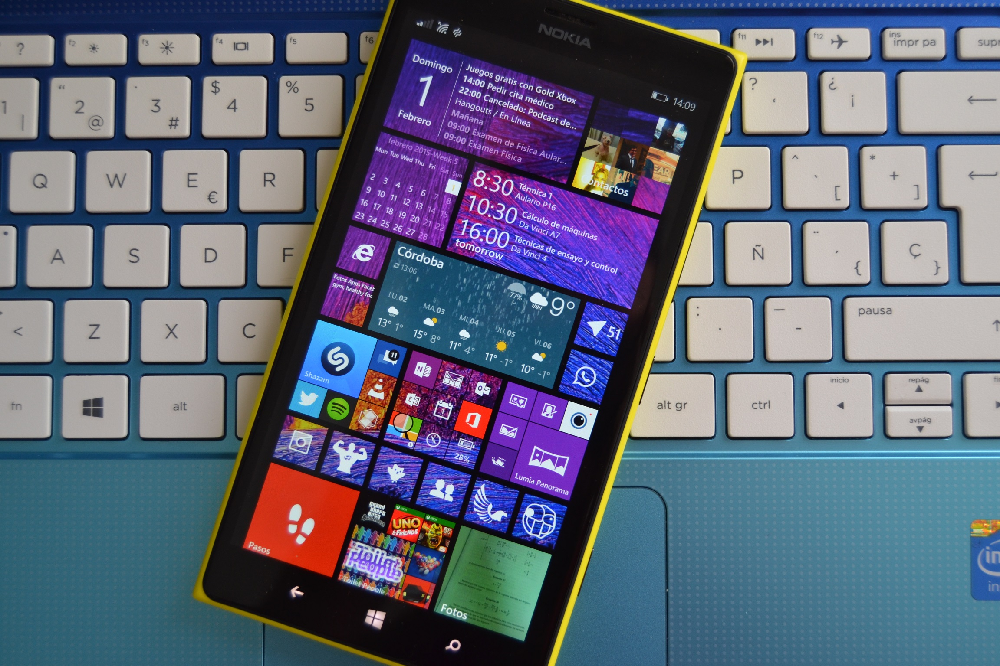
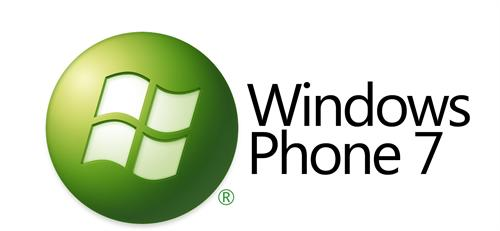
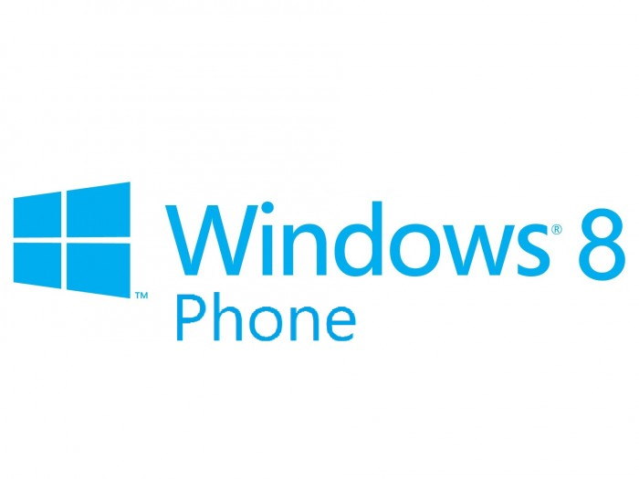
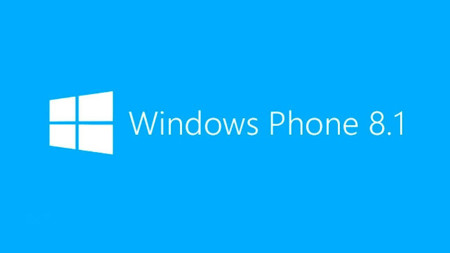

Windows Phone
Windows Phone es un sistema operativo móvil , desarrollado por Microsoft como sucesor de Windows Mobile. A diferencia de su predecesor fue enfocado en el mercado de consumo en lugar del mercado empresarial. Con Windows Phone, Microsoft ofreció una nueva interfaz de usuario que integró varios de sus servicios activos. Compitió directamente contra Android de Google e iOS de Apple. Su última versión fue Windows Phone 8.1, lanzado el 14 de abril de 2014.
Debido a la evidente fragmentación de sus sistemas operativos, Microsoft anunció en enero de 2015 que dará de baja a Windows Phone, para enfocarse en un único sistema más versátil denominado Windows 10 Mobile, disponible para todo tipo de plataformas (teléfonos inteligentes, tabletas y computadoras).

Historia
Windows Phone, cuyo nombre en clave durante su desarrollo era "Photon", es el sucesor de Windows Mobile, desarrollado por Microsoft y basado en el núcleo Windows Embedded CE 6.0. Microsoft mostró Windows Phone por primera vez el 15 de febrero de 2010, en el Mobile World Congress de Barcelona y reveló más detalles del sistema en el MIX 2010 el 15 de marzo. La versión final de Windows Phone 7 se lanzó el 21 de octubre de 2010 en Europa y el 8 de noviembre en Estados Unidos. Inicialmente, Windows Phone estaba destinado para ser lanzado durante el 2009, pero varios retrasos provocaron que Microsoft desarrollara Windows Mobile 6.5 como una versión de transición. La interfaz fue revisada en su totalidad y comparte características visuales con la interfaz del dispositivo Zune HD y además utilizaba el Zune Software para gestión de contenidos, apps, y actualizaciones en la séptima versión.
Versiones
Las versiones actualizadas del software son enviadas a los usuarios de Windows Phone mediante Microsoft Update, como en el resto de los sistemas operativos Windows. Microsoft tuvo la intención de actualizar directamente todos los teléfonos con Windows Phone en vez de depender de los fabricantes o de los operadores de telefonía móvil, pero finalmente cambió su política. Las actualizaciones son distribuidas bajo la modalidad "over the air", lo que significa que se pueden instalar directamente desde el terminal, sin utilizar una computadora (excepto todos los dispositivos que tengan instalada alguna versión de Windows Phone 7).
Windows Phone 7

Windows Phone 7 (nombre en clave Photon) es la primera versión de Windows Phone, que remplazaría a Windows Mobile y al cancelado Windows Mobile 7. Tiene una interfaz llamada Modern UI, que luego sería implementada en Windows 8 y las versiones posteriores. Las aplicaciones no son compatibles con Windows Mobile 6, ya que utilizan la extensión de aplicación .xap y están basadas en Silverlight. Un tiempo después del lanzamiento internacional de Windows Phone 7, Microsoft anunció su primera actualización mayor oficial, Windows Phone 7.5 (Mango), con mejoras y nuevas características. Debido a que el sistema no puede ser actualizado a Windows Phone 8 por cambios en el kernel y requerimientos de hardware distintos, Microsoft anunció una actualización (Windows Phone 7.8) que llevaría parte del código de Windows Phone 8 a Windows Phone 7 para disfrutar de varias de las nuevas funciones y características.
Windows Phone 8

Windows Phone 8 es la segunda generación del sistema operativo para móviles Windows Phone. Su versión RTM (Para fabricantes) fue lanzada el 14 de septiembre de 2012 y fue liberado a los consumidores el 29 de octubre de 2012.
Windows Phone 8.1
Windows Phone 8.1 es la última versión y definitiva de Windows Phone 8, el sistema operativo móvil de Microsoft. Fue anunciada el 2 de abril, en la conferencia Build para desarrolladores, y lanzada el 14 de abril para desarrolladores y a lo largo de mayo y junio para el público en general. Todos los actuales modelos con Windows Phone 8 son actualizables gratuitamente a esta versión 8.1.

El 21 de enero de 2015, se presentó su sucesor, Windows 10 Mobile, con nuevas funcionalidades y mejor rendimiento. Algunos terminales podrán actualizarse a Windows 10 Mobile. Aunque finalmente, después de varios retrasos, los dispositivos que se pueden actualizar son menos de los prometidos por Microsoft.
Desde que se presentó Windows 10 Mobile al público, Windows Phone 8.1 fue la última versión de Windows Phone.
Caracteristicas
Windows phone, posee varias caracteristicas propias, a continuacion se las describiremos a detalle.
Interfaz
Windows Phone cuenta con una nueva interfaz de usuario llamada Modern UI. La pantalla de inicio se compone de Live Tiles, mosaicos dinámicos que son enlaces a aplicaciones u objetos individuales (como contactos, páginas web o archivos multimedia). Estos mosaicos se actualizan frecuentemente manteniendo informado de cualquier cambio al usuario. La información que se muestra en los mosaicos dinámicos puede ser desde llamadas, mensajes recibidos, correos electrónicos pendientes, citas previstas, juegos o enlaces rápidos a aplicaciones. La pantalla de inicio y la posición de los mosaicos dinámicos se puede personalizar pulsando y arrastrando los mosaicos a la posición que se desee
La interfaz por defecto de Windows Phone tiene un estilo como visual negro que prolonga la batería en pantallas LED. El usuario puede elegir un tema claro y también cambiar a varios colores tales como rojo, mango, azul, verde, marrón, rosado, lima, magenta, morado o verde azulado.
Teclado
Los usuarios pueden ingresar texto usando un teclado táctil en pantalla. Entre sus principales características se incluyen el Word Flow (teclado Swype), revisión ortográfica, predicción de palabras y una tecla dedicada para insertar emoticonos y otros símbolos. Los desarrolladores de aplicaciones pueden usar diferentes versiones del teclado virtual para limitar a los usuarios a diferentes conjuntos de caracteres, como caracteres numéricos solamente. Los usuarios pueden cambiar una palabra después de haberla escrito presionando en ella, lo que mostrará una serie de palabras similares.
Mapas realizados por Nokia
Windows Phone posee mapas realizador por Nokia; Nokia se hizo cargo de los mapas en WP8 y ofrece varias funciones interesantes: visualización de contenidos sin conexión a Internet, herramientas para que los desarrolladores saquen partido de sus funciones, asistencia durante el camino, y navegación en tiempo real de Nokia.
Motor De Busqueda
Bing
El buscador por defecto es Bing. Antes era posible cambiar el buscador predeterminado (Bing) por Google, pero después se retiró esa función.
Navegador Web
Internet Explorer
Windows Phone 8.1 cuenta con Internet Explorer 11, con gestión de favoritos, anclado de webs a la pantalla de inicio, pestañas de navegación y otras características. Se sincroniza totalmente con Internet Explorer en el PC, manteniendo guardadas contraseñas, favoritos e incluso pestañas abiertas (empieza a navegar en el PC y continúa en el móvil). Es posible descargar otros navegadores desde la Tienda de Windows Phone.
Cortana Y Busquedas
Los dispositivos Windows Phone tienen un botón dedicado a búsquedas en la parte frontal del dispositivo. En Windows Phone 8 este botón realiza diferentes acciones como búsquedas en internet (usando Bing), escaneo y traducción de textos, lectura de códigos QR, búsqueda de libros por código de barras (Bing Vision), reconocimiento de canciones (Bing Music) y búsqueda de lugares de interés usando la ubicación actual (Bing Local Search). En Windows Phone 8.1 este botón activa Cortana, el asistente virtual de Windows Phone (como Siri o Google Now en iOS y Android, respectivamente).
Hubs
Windows Phone no es un sistema centralizado solamente en aplicaciones sino que se organiza en un nuevo concepto denominado hubs. Los hubs de Windows Phone clasifican acciones y agrupan las aplicaciones que se correspondan con una actividad determinada. De esta forma en WP están presentes hubs de Contactos, Office y Juegos Las aplicaciones de terceros se pueden integrar en el hub que corresponda mejorando sus funciones. En Windows Phone 8.1 Fotos dejó de ser un hub para pasar a ser una app independiente del sistema (actualizable desde la Tienda) y Música + Vídeos fue sustituido por dos apps separadas: Xbox Music y Xbox Video; además que a partir de la actualización 8.1, todos los juegos que se instalen pasaran a ser parte de "todas las aplicaciones" en vez del Hub de Juegos.
Contactos
En este lugar es donde se guardan todos los contactos y se centraliza su actividad en línea (como cambios de estado, imágenes compartidas y comentarios) en Facebook, Twitter y LinkedIn.
Fotos
Esta aplicación (Fotos en WP8 e Imágenes en WP7), es el lugar donde se almacenan todas las imágenes que el usuario ha guardado en el teléfono; así como las fotografías que ha hecho. En este hub se pueden integrar todas las aplicaciones que tienen funciones de edición y distribución de imágenes y fotografías, como Instagram o Facebook.
Office
En el hub de Office se puede acceder a Word, Excel, OneNote y PowerPoint. Estas apps nos permiten ver, editar y compartir archivos de estos servicios a través de OneDrive y Sharepoint. El hub de Office permite realizar comentarios y correcciones sobre documentos y trabajar de manera colaborativa con otros usuarios.
Xbox
También es aquí donde se integran las aplicaciones que tengan funciones de acceso, edición o distribución de contenido multimedia. El hub Xbox Juegos es la zona donde se integra la parte destinada al entretenimiento en Windows Phone. En este hub se incluyen las funcionalidades de Xbox Live a través del cual el usuario puede compartir logros, retar a amigos y personalizar su avatar. Se incluyen en este hub todos los juegos, estén o no integrados con Xbox Live.
Podcasts
Esta aplicación permite la reproducción de podcasts en línea y descargarlos al téléfono.
Tienda
La tienda de Windows Phone es una plataforma web para que los usuarios descarguen: aplicaciones, juegos, música y vídeos. Es el equivalente a Play Store de Google-Android y la App Store de Apple-iOS. Está gestionada por Microsoft, que prueba una por una cada aplicación o juego que es enviada. Por ejemplo, no se permite contenido que incluya discriminación de ningún tipo, uso de drogas, alcohol o tabaco, o material sexualmente sugestivo. Cuenta con más de 560.000 aplicaciones y juegos (hasta enero del 2015) y se añaden aproximadamente 15.000 cada mes. En la actualidad, los desarrolladores están dejando la plataforma y retirando aplicaciones debido a la poca cuota de mercado de Windows Phone.